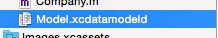
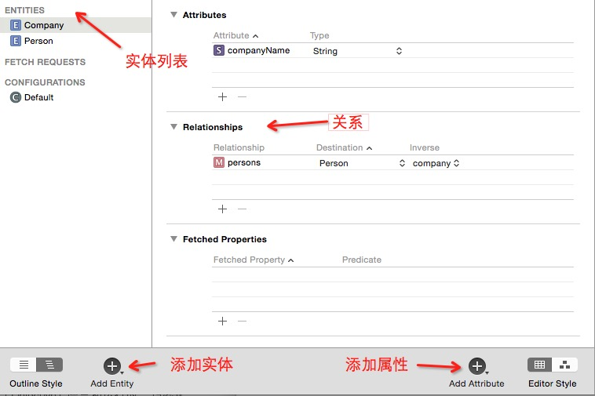
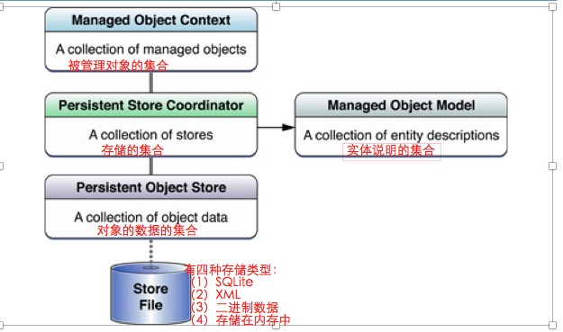

只是学习,测试用
###前言
- Core Data 不用去写SQLite语句，是完全面向对象的数据操作API,如果之前没有数据库开发经验，想要写出漂亮的SQLite或没有错误的SQLite是很难的，
- Core Data,第一眼看着挺复杂的，可是当你理解他核心的几个对象及关系后再用起来就很方便也很简单，现在外面开发的有很多都用Core Data来做离线数据缓存 为用户节约流量，避免应用打开每次都要去加载网络数据
- Core Data也是XMPP里保存数据最核心的技术
iOS中的数据持久化方式，基本上有以下四种：
1.属性列表 ---- 涉及到的主要类：NSUserDefaults“偏好设置”
2.对象归档 ---- 使用对象归档,对象必须实现NSCoding协议 实现两个方法:
- (void) encodeWithCoder:(NSCoder *)encoder
- (void) initWithCoder:(NSCoder *)encoder
3.SQLite3 ---- SQLite是一个开源的嵌入式关系数据库，它在2000年由D.
Richard Hipp发布，它的减少应用程序管理数据的开销，SQLite可移植性好，很- - 容- 易使用，很小，高效而且可靠 不建议直接操作SQlite 可以采用开源的第三方法 - 框架 FMDB
4.Core Data
1.Core Data简介:
-
Core Data 是iOS SDK里的一个很强大的框架允许程序员
以面向对象的方式存储和管理数据； -
Core Data是一个模型层的技术,帮助建立代表程序状态的模型层,Core Data 也是一种持久化技术,能将模型对象的状态
持久化到磁盘,最重要的特点是:Core Data 不仅是一个加载、保存数据的框架，它还能和内存中的数据很好的共事； - 在数据操作过程中，
无需写任何SQL语句- Core Data使用包括
实体和实体间关系，以及查找符合某些条件实体的请求等内容 - 开发者可以在纯对象层上查找与管理这些数据，而不必担心存储和查找的实现细节
- Core Data使用包括
- Core Data框架最早出现在Mac OS X 10.4 Tiger (Mac OS X v10.4，开发代号“Tiger”（老虎），是苹果电脑公司开发的操作系统，于2005年4月29日正式上市销售。) 与 iOS 3.0系统(iPhone OS3.0面世与iPhone3GS。是在2009年6月17日发布)，
历时10年经过成千上万的应用程序以及数以百万用户的反复的验证，Core Data确实已经是一套非常成熟的框架 - CoreData利用了Objective-C语言和运行时，巧妙地集成了Core Foundation框架。是一个易于使用的框架，不仅可以优雅地管理对象图，而且
在内存管理方面表现异常优异
================================================================
持久化概念:
<持久化（Persistence）>，即把数据（如内存中的对象）保存到可永久保存的存储设备中（如硬盘）。持久化的主要应用是将内存中的对象存储在关系型的数据库中，当然也可以存储在磁盘文件中、XML数据文件中等等。 持久化是将程序数据在持久状态和瞬时状态间转换的机制。 JDBC就是一种持久化机制。文件IO也是一种持久化机制。
数据持久化概念:
数据持久化就是将内存中的数据模型 转换为 存储模型,以及将 存储模型 转换为 内存中的数据模型的 统称. 数据模型可以是任何数据结构或对象模型,存储模型可以是关系模型、XML、二进制流等。cmp和Hibernate只是对象模型到关系模型之间转换的不同实现。
2.使用Core Data
1.需要在Xcode中的数据模型编辑器中设计好各个实体以及定义好他们的属性和关系。之后，通过操作这些对象，结合Core Data完成数据的持久化：


Core Data的学习建议:
- 第一眼看到Core Data令人生畏的复杂架构关系，很多人都会有无从下手的感觉
- 可是，一旦理解架构图中各个部件的组成及相互之间的关系，就能体会到Core Data API的简洁和直观了
Core Data stack：如果能够理解Core Data stack中的各个成员所扮演的角色，那么再使用Core Data就不会感觉到困难了- 误区：
有很多人都叫它面向对象型的数据库，但Core Data不是一个数据库，不要用数据库的眼光去看待Core Data - Core Data不是应用程序的数据库，也不是将数据持久化保存到数据库的API。Core Data
是一个用于管理对象图的框架。Core Data可以把对象图写入磁盘从而持久化保存，但是这不是框架的主要目标
3.Core Data stack
-
Core Data stack是Core Data的核心，由一组Core Data核心对象组成
Calss 描述 NSManagedObjectModel 被管理对象模型 NSPersistentStoreCoordinator 负责将数据保存到磁盘 NSManagedObjectContext 负责管理模型对象的集合
图形说明

- use scalar properties for primitive data type // 使用标量属性的原始数据类型
-
scalar 标量类型：默认NSNumber，也可以使用int64_t，float_t或BOOL 在iOS5和OS X10.7之前，scalar不能自动生成，程序员必须自己添加setter和getter的实现 如果创建被管理对象的子类时勾选了此选项，子类中不会对实体的属性做处理，保存原始数据类型 例：int_16不会再变为NSNuber类型 ，所以默认都不用勾选
- @dynamic 在Objective-C中，如果将某个属性实现为@dynamic，意味着告诉编译器不会在编译时确定这个属性的行为实现，因此不需要在编译期间对这个属性的getter、setter做检查
Core Data 中的线程安全
一定要记住：Core Data不是线程安全的 NSManagedObject NSManagedObjectContext NSPersistentStoreCoordinator 以上三个类，都不是线程安全的，同时这些类实例化的对象仅允许在被创建的线程内被使用 这意味着，在多线程使用Core Data的时候，每个需要执行Core Data的线程都需要有一个NSManagedObjectContext，但是每一个NSManagedObjectContext都不知道彼此的存在，同时在一个上下文中所做的修改，也不会自动同步到另一个上下文中
```objc - (NSString *)appendDocumentDir { NSString *dir = [NSSearchPathForDirectoriesInDomains(NSDocumentDirectory, NSUserDomainMask, YES) lastObject]; return [dir stringByAppendingPathComponent:self.lastPathComponent]; }
```